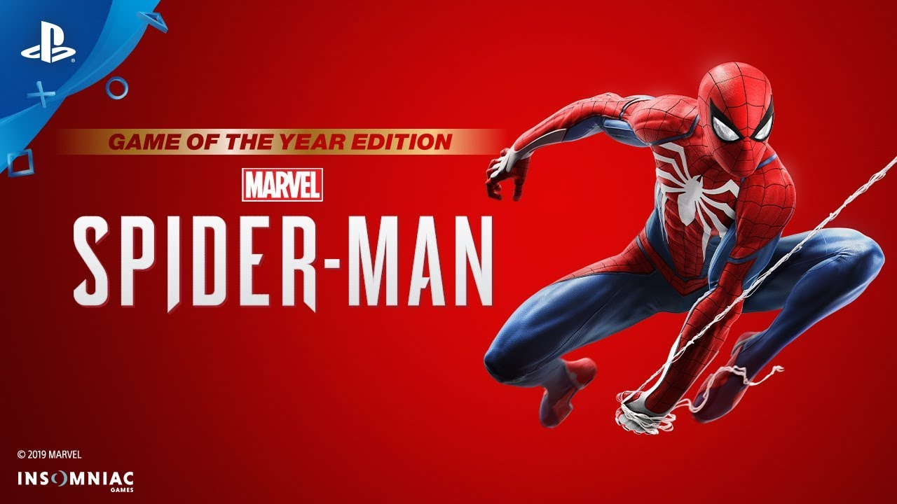

Empresas dedidacas a la creación y publicación de videojuegos
Son empresas dedicadas a la creación, desarrollo y distribución de videojuegos y otros tipos de juegos. Estas compañías pueden ser de diferentes tamaños, desde pequeños equipos de desarrollo independientes hasta grandes corporaciones con miles de empleados. Las compañías que hacen juegos suelen tener equipos de desarrolladores, diseñadores, artistas, músicos y otros profesionales que trabajan juntos para crear juegos que sean emocionantes, atractivos y desafiantes para los jugadores. Estas compañías también pueden trabajar con distribuidores y publicadores para llevar sus juegos al mercado y promocionarlos ante el público. A continuación, se muestran las principales empresas:
Nintendo es una de las compañías más importantes en la industria de los videojuegos. Fundada en Japón en 1889 como una compañía de juegos de cartas, Nintendo comenzó a desarrollar videojuegos en la década de 1970 y lanzó su primera consola de videojuegos, la Nintendo Entertainment System (NES), en 1985. Desde entonces, Nintendo ha creado muchas de las franquicias más populares y queridas de la industria de los videojuegos, incluyendo Mario, The Legend of Zelda, Pokémon, Metroid y Donkey Kong, entre otros. La compañía ha continuado innovando con cada nueva consola de juegos que ha lanzado, desde la Wii hasta la Nintendo Switch, y ha sido pionera en nuevas formas de juego y control, como el uso de sensores de movimiento y pantallas táctiles. Nintendo sigue siendo un líder en la industria de los videojuegos y es conocida por sus juegos y consolas de alta calidad y su dedicación a la diversión y la innovación.


Sony Interactive Entertainment es una subsidiaria de la compañía japonesa Sony Corporation que se dedica a la producción y distribución de videojuegos y hardware de juegos. Sony ha sido un jugador importante en la industria de los videojuegos desde 1994, cuando lanzó su primera consola, la PlayStation. Desde entonces, ha lanzado varias consolas de juegos exitosas, incluyendo la PlayStation 2, PlayStation 3, PlayStation 4 y PlayStation 5. Además de las consolas de juegos, Sony es conocida por su línea de juegos exclusivos para PlayStation, como God of War, Uncharted, The Last of Us y Gran Turismo, entre otros. La compañía también es propietaria de la plataforma de juegos en línea PlayStation Network y ofrece servicios de suscripción como PlayStation Plus. Sony ha demostrado un compromiso con la calidad y la innovación en la industria de los videojuegos y ha construido una base de fans leales en todo el mundo.



Microsoft es una de las compañías más grandes del mundo y es conocida por su software, hardware y servicios. En la industria de los videojuegos, Microsoft es conocida por su consola de videojuegos, la Xbox, y su línea de juegos exclusivos para Xbox, incluyendo Halo, Forza Motorsport y Gears of War. La compañía también ofrece servicios en línea como Xbox Live, que permite a los jugadores conectarse y jugar en línea con otros jugadores de todo el mundo. Microsoft también ha estado explorando nuevas tecnologías en la industria de los videojuegos, como la realidad virtual y aumentada. La empresa ha trabajado en colaboración con fabricantes de hardware de realidad virtual para desarrollar experiencias de juego inmersivas y emocionantes para los jugadores. Con su dedicación a la innovación y la calidad, Microsoft ha ganado un lugar importante en la industria de los videojuegos y ha construido una base de fans leales.